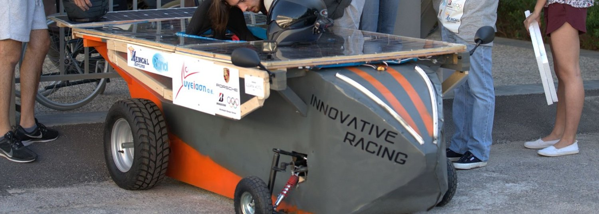
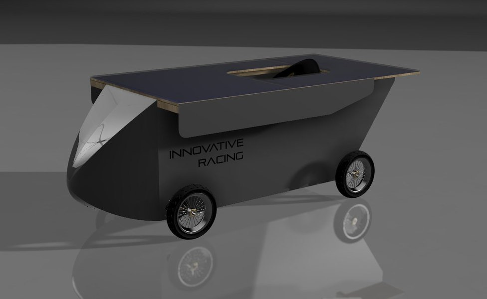
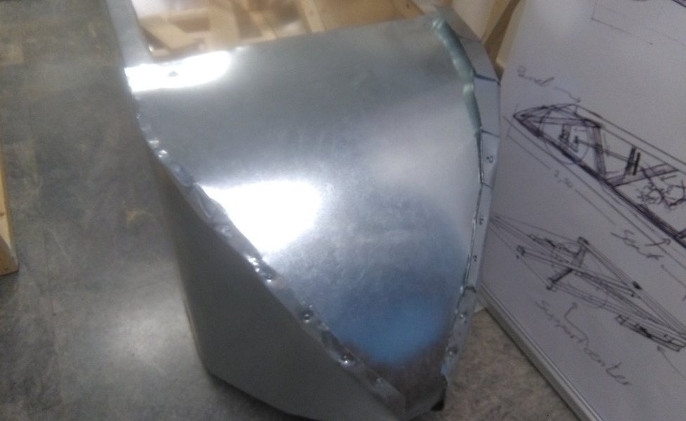
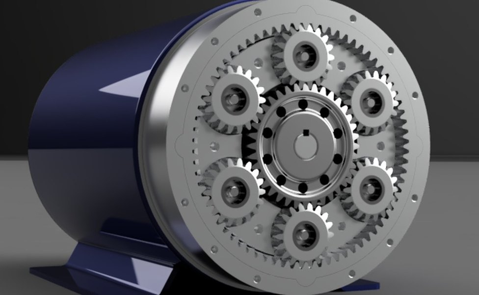

Individual / School project · The American College of Greece
Solar Racing Car.
A school solar-car race, three teams, a €3,700 sponsor-funded budget, and a pine frame the rules would not let us replace. It is an early school engineering project, and the first place the habit shows up: the drivetrain’s planetary gearbox went to twenty numbered CAD revisions, then started again from scratch.

FIG. 01 — The finished car on race day, July 2019
The brief

The school ran its own solar-car race and three teams entered, each building a car. The format did the work of a regulation book: every car was left parked in the sun on adjacent spaces, batteries empty, for the same length of time — then had to compete on whatever it had collected. Four events, scored three points for a win, two for second and one for third: a 100 m acceleration run, a 30-minute endurance run, a design contest and an efficiency contest.
Three hard constraints shaped everything else. The chassis frame had to be pine. The powertrain was capped at 1 kW. And there was no budget until we raised one — €3,700 across the car and the rest of the equipment, sold to sponsors against a published tier table starting at €150 and topping out at €1,700.
I was one of five. The team deck lists my role as coordinator, mechanical engineer and designer, alongside a finance lead, a public-relations lead, an electrical lead and the driver — which in practice meant I coordinated the team and led the mechanical design, while teammates covered finance, communications, electrical systems and driving.
Chassis & body
The vehicle assembly drawing settles the material argument in one parts list: a pine frame, an aluminium nose and left and right side panels over it, polished stainless-steel supports, and acrylic for the panel glazing. Nothing exotic, because nothing exotic could be cut and fitted by five people with hand tools — the constraint I designed to throughout, and the reason the body is a developable surface with a single bend line rather than a compound curve.
The cells went on a roof deck of their own: a 1,500 × 1,100 mm clear-acrylic cover, and a support panel carrying seven separate acrylic sections above the cockpit. The panels themselves were built up in-house and tuned for the voltage and current the powertrain actually wanted, rather than bought in as a finished module.
The drawings are where a school project either is or is not engineering. Each part went out as a title-blocked blueprint with its own revision count and issue date — the side panelling released at revision 1 in February 2018, the roof panel support at revision 6 that June, the steering link at revision 4 with calculated masses for each of its four steel parts recorded on the drawing (21.221 g and 25.743 g). That discipline is the part of this project that carried.

Raced drivetrain, and later gearbox development

What raced was deliberately simple: a brushed motor driving a single live axle through a chain, with a disc brake on the axle. The reduction lived in the sprocket pair — a keyed 15-tooth steel sprocket for ANSI 40 chain on a 14 mm motor shaft, released at revision 3 in March 2019, sitting on a sprocket base that threaded onto the shaft M3 × 0.5. The throttle pedal beside it was an eleven-part assembly with an angle encoder and two shock absorbers, and its drawing went out at revision 32.
The planetary gearbox was the follow-on, not the raced part — its drawings and renders are all dated after the July 2019 race, in January and February 2020 — and it is the piece of this project I kept going back to. The assembly drawing specifies a 36-tooth sun, six 18-tooth planets and a 72-tooth ring, all module 1.5 at a 20° pressure angle with 0.10 mm backlash. Those tooth counts close on themselves (72 = 36 + 2 × 18) and give a 3:1 reduction with the ring held and the carrier taken as output.
The version numbering is the honest record of how that was arrived at. The first gearbox reached v20, with an assembly animation recorded on 21 January 2020. Then it was set aside and restarted from scratch: “Planetary Gearbox 2.0” was at v7.1 a month later. Twenty numbered CAD revisions and a clean-sheet restart, on a part for a school car that had already finished racing.
What it is, and what it is not
The team won the school’s three-car race in July 2019. That is the scale of it, stated plainly, and this page does not ask to be read as more. It is here because it is the earliest evidence of how I work — publish the revision count, design to what can actually be built, and keep going after a part is nominally finished — and because a reader can check it. Every claim above comes off a drawing title block or the team’s own sponsorship deck.
The same instincts, with real tooling behind them, produced the CFRP wheel programme six years later, and the 19-simulation layup sweep published in full on PYRFOROS IV. This is where the counting started.